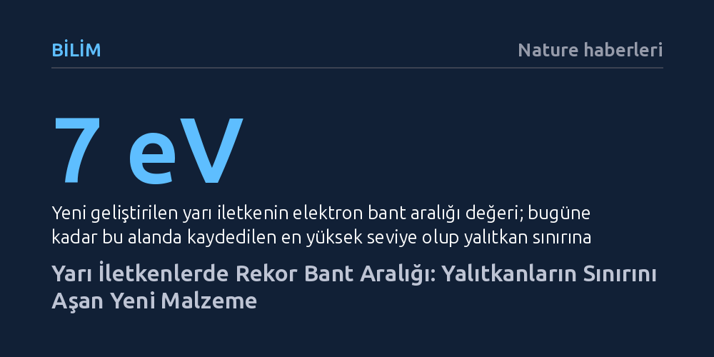

BILIM · Nature haberleri · 2026-10-08
Araştırmacılar, bant aralığı 7 elektronvoltu aşarak bugüne kadarki en yüksek değere ulaşan yeni bir yarı iletken geliştirdi. Bu keşif, yarı iletken malzemeleri geleneksel olarak yalıtkanlara ait kabul edilen fiziksel sınırlara taşıyor.
Yarı iletkenler ile yalıtkanlar arasındaki katı ayrımı esneterek aşırı yüksek gerilim ve zorlu sıcaklıklarda çalışabilen dayanıklı elektronik sistemlerin önünü açıyor.

Modern teknolojinin omurgasını oluşturan yarı iletkenler, akıllı telefonlardan güneş panellerine kadar elektriğin hassas biçimde yönlendirildiği her sistemin kalbinde yer alıyor. Bir yarı iletkenin nerede ve hangi koşullarda işlev görebileceğini belirleyen en kritik parametre ise 'elektronik bant aralığı', yani bir elektronun iletken hale geçebilmesi için ihtiyaç duyduğu enerji miktarıdır.
Nature dergisinde yayımlanan yeni bir çalışma, bu alandaki yerleşik sınırları yukarı taşıyan bir başarıya imza attı. Steele ve çalışma arkadaşları, bant aralığı 7 elektronvoltu (eV) aşan bir yarı iletken bildirdi. Bu değer, bugüne kadar bir yarı iletkende kaydedilen en geniş bant aralığı olmakla kalmıyor; yarı iletkenleri uzun süredir yalnızca yalıtkanlara ait olduğu düşünülen bir enerji rejimine sokuyor.
Yüksek gerilim hatları, güç şebekeleri veya aşırı sıcaklıklara maruz kalan motor bölmeleri gibi ortamlar, klasik yarı iletkenlerin kolayca bozulduğu zorlu çalışma alanlarıdır. Bu koşullarda görev yapacak bileşenlerin yüksek gerilim altında kontrolsüzce akım geçirmemesi, yani yüksek enerji eşiğine sahip geniş bant aralıklı malzemelerden üretilmesi gerekir.
Böylesine geniş bant aralığına sahip yarı iletkenleri kararlı bir şekilde üretmek bugüne kadar malzeme biliminin en çetin engellerinden biriydi. Enerji eşiği büyüdükçe malzemenin elektriksel özelliklerini hassas biçimde kontrol altında tutmak son derece zorlaşıyordu.
7 elektronvolt eşiğinin aşılması, yalıtkanların yüksek gerilim direncini yarı iletkenlerin elektriksel kontrol yeteneğiyle birleştiren yeni bir malzeme sınıfına işaret ediyor. Malzemenin yalıtkanlara özgü bir dayanıklılık sergilerken aynı zamanda akımı yönetebilmesi, geleceğin elektronik mimarileri için önemli imkanlar barındırıyor.
Bu ilerleme; elektrikli araç güç dönüştürücülerinden yüksek voltajlı enerji iletim sistemlerine ve havacılık donanımlarına kadar pek çok kritik teknolojide daha hafif, daha az ısınan ve enerji kaybı düşük bileşenlerin tasarlanmasına zemin hazırlıyor.